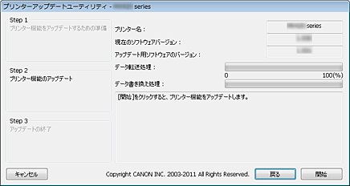

プリンターアップデートユーティリティの動作環境
-
対象OS
-
用意するもの
-
Windowsをご使用の場合は、プリンタードライバーのプロパティ画面の［ポート］シートで［双方向サポートを有効にする］にチェックマークを付けてください。
プロパティ画面の開きかたについては、プリンターに同梱されている電子マニュアル（取扱説明書）を参照してください。
Windows
- Windows 8、Windows 7、Windows Vista、Windows XP
Mac OS
- Mac OS X v10.8、Mac OS X v10.7、Mac OS X v10.6、Mac OS X v10.5.8
- プリンタードライバーがインストールされているコンピューター

- お使いのプリンター
- USBケーブル
- プリンターアップデートユーティリティ
アップデートが必要か確認する
アップデートが必要かどうかは、ノズルチェックパターンを印刷して確認することができます。
ノズルチェックパターン印刷結果に印刷されたソフトウェア（ファームウェア）バージョン「Ver. X.XXX」を確認し、ファームウェアバージョンがVer. 2.000より前の場合はファームウェアのアップデートが必要です。
次の「ファームウェアバージョンアップ方法」に従ってアップデートを行ってください。

-
ノズルチェックパターン印刷については、プリンターに同梱されている電子マニュアル（取扱説明書）を参照してください。
ファームウェアバージョンアップ方法
-
コンピューターと、お使いのプリンターをUSBケーブルで接続
プリンターにLANケーブルやカメラ接続のUSBケーブルを接続している場合、すべて抜きます。
カードスロット対応機種では、カードスロットにカードが挿入されている場合はすべて抜きます。
-
コンピューターとUSBケーブルで接続するプリンターは、1台のみにしてください。
-
Mac OSをご使用の場合は、コンピューターがスリープしない設定になっていることをご確認ください。
-
-
Windowsの場合は、（Printer Update.exe）をダブルクリックして、アップデートユーティリティを起動
Mac OSの場合は、（プリンターアップデート）をダブルクリックして、アップデートユーティリティを起動
-
プリンターアップデートユーティリティ上に表示されている［Step 1］の内容を確認し、プリンターの電源を入れて［次へ］をクリック
-
エラーメッセージが表示された場合、以下の原因が考えられます。
-
原因（1）USBケーブルが接続されていない。
対処方法：USBケーブルを接続して、手順1からやり直してください。 -
原因（2）アップデートするプリンターとは異なるプリンターのアップデートファイルをダウンロードしている。
対処方法：アップデートするプリンターのファイルをダウンロードして、手順1からやり直してください。
-
-
-
プリンターアップデートユーティリティ上に表示されている［Step 2］の内容を確認して、［開始］をクリック
*お使いのOSによって、操作画面の表示が異なる場合があります。
［プリンター名］：コンピューターに接続されているプリンター名
［現在のソフトウェアバージョン］：接続されているプリンターのファームウェアバージョン
［アップデート用ソフトウェアのバージョン］：今回アップデートするファームウェアのバージョン
-
アップデートが完了するまで、プリンターの電源を切ったり、USBケーブルを抜いたりしないでください。故障の原因になります。
-
［開始］をクリックできない場合、ファームウェアの書き換えが必要ないプリンターにアップデートを実行しようとした可能性があります。もう一度［現在のソフトウェアバージョン］を確認して、アップデートの対象バージョンか確認してください。
対象でない場合は、アップデートを中止してください。 -
アップデート中は、プリンターのエラーランプがオレンジ色に点滅します。
-
-
プリンターアップデートユーティリティ上に［Step 3］の画面が表示されたら、メッセージの内容を確認して［終了］をクリック
以上でファームウェアのバージョンアップは完了です。
バージョンアップが完了すると、プリンターの電源は自動で切れます。プリンターを使用する場合は、一度電源ケーブルを抜いて、再度電源を入れてください。
プリンターをLAN接続でお使いの場合は、USBケーブルを抜き、LANケーブルを接続してください。
-
プリンターをLAN接続でお使いの場合は、通常使うプリンターの設定をLAN接続に戻してください。
Windowsをご使用の場合は、設定をLAN接続に戻すには、プリンターポートの設定でポート名“CNBJNPxxxxxxxxxx”の「Canon XXX Printer」を選ぶ必要があります。
設定方法については、プリンターに同梱されている電子マニュアル（取扱説明書）を参照してください。
-
アップデートの途中で電源が落ちた場合などは、アップデートが正常に終了しません。
プリンターの電源を切って再度電源を入れてもプリンターが正常に動作しない場合は、アップデートが正常に終了していない可能性があります。
-
エラーが表示された場合の原因と対処方法
プリンターアップデートユーティリティの操作中にエラーが見つかると、エラーメッセージが表示されます。
エラーメッセージが表示された時は、メッセージの指示に従って操作を行ってください。
以下に、主に表示するエラーメッセージの原因と対処方法を記述します。
|
メッセージ |
原因 |
対処方法 |
|---|---|---|
Windowsまたは、Mac OSをお使いの場合 |
||
|
本プログラムは、現在お使いのOSには対応していません。 |
使用対象外のOS上でプリンターアップデートユーティリティを操作しようとした。 |
使用可能なOS環境でプリンターアップデートユーティリティを操作する。 |
|
プリンターが2台以上接続されています。 USBケーブルで接続するプリンターを必ず1台のみにして、ユーティリティを再起動してください。 |
コンピューターにアップデートするプリンターを2台以上接続している。 |
プリンターを1台だけ接続する。 |
|
プリンターの状態が不正です。 プリンターの電源を入れ直して、ユーティリティを再起動してください。 |
プリンターがアップデートを実行できなかった。 |
プリンターの電源を入れ直す。 |
|
プリンター機能のアップデート中に、エラーが発生しました。 アップデートに失敗したため、このままではプリンターを使用できません。 プリンターの電源を入れ直して、必ずユーティリティを再起動してください。 |
アップデートの実行中にプリンターの電源を切ったかUSBケーブルを抜いた。 |
［OK］をクリックしてプリンターアップデートユーティリティを終了する。プリンターの電源を一旦切って、数秒後に電源を入れ直す。 もし、プリンターが正常に立ち上がらなかったり、アップデートができなくなった場合は修理が必要になります。 |
Windowsをお使いの場合 |
||
|
プリンターが見つかりません。 次の内容を確認してから、ユーティリティを再起動してください。
|
|
|
|
Mac OSをお使いの場合 |
||
|
Mac OS X Classicが起動されています。 |
Mac OS X上でClassicを起動中にプリンターアップデートユーティリティを操作しようとした。 |
Classicを停止し、Mac OS Xからプリンターアップデートユーティリティを操作する。 |
|
プリンターが見つかりません。 次の内容を確認してから、ユーティリティを再起動してください。
|
|
|